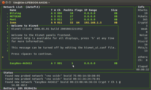

Kismet
Dieser Artikel wurde für die folgenden Ubuntu-Versionen getestet:
Ubuntu 14.04 Trusty Tahr
Artikel für fortgeschrittene Anwender
Dieser Artikel erfordert mehr Erfahrung im Umgang mit Linux und ist daher nur für fortgeschrittene Benutzer gedacht.
Zum Verständnis dieses Artikels sind folgende Seiten hilfreich:
Kismet  ist ein unter der GPL stehender, passiver WLAN-Sniffer mit textbasierter ncurses-Oberfläche. Passiv heißt, dass Kismet keine Anfragen an vorhandene Netzwerke sendet, sondern Pakete, die von vorhandenen Netzwerken gesendet werden, abfängt. Die WLAN-Erweiterung des Computers wird zu diesem Zweck in den "Monitormode" geschaltet.
ist ein unter der GPL stehender, passiver WLAN-Sniffer mit textbasierter ncurses-Oberfläche. Passiv heißt, dass Kismet keine Anfragen an vorhandene Netzwerke sendet, sondern Pakete, die von vorhandenen Netzwerken gesendet werden, abfängt. Die WLAN-Erweiterung des Computers wird zu diesem Zweck in den "Monitormode" geschaltet.
Weil auch von Netzwerken, deren (E)SSID verborgen wird, Pakete gesendet werden, ist Kismet im Stande, versteckte (E)SSIDS auszulesen. Neben der (E)SSID stellt Kismet auch andere relevante Informationen wie Kanal, Typ der Verschlüsselung und die Signalstärke des Netzwerks dar. Damit eignet sich das Programm insbesondere zum Auffinden aktiver WLANs, um zum Beispiel das eigene Drahtlos-Netzwerk auf einen konfliktfreien Betrieb in der nachbarschaftlichen Umgebung einzustellen.
Hinweis:
Kismet funktioniert nicht mit allen WLAN-Karten und -Treibern. Hierzu zählen zum Beispiel WLAN-Karten die NdisWrapper benötigen. Diese bauen auf Windows-Treiber auf, welche nicht von Kismet genutzt werden können. Des Weiteren muss die verwendete Schnittstelle den Monitor Mode unterstützen. Genauere Informationen zu unterstützten WLAN-Adaptern sind unter Punkt 12 "Capture Sources" in der Datei /usr/share/doc/kismet/README.gz (oder in der Kismet-Dokumentation Abschnitt 7) zu finden.
Installation¶
Kismet kann aus den offiziellen Paketquellen installiert [1] werden:
kismet (universe)
 mit apturl
mit apturl
Paketliste zum Kopieren:
sudo apt-get install kismet
sudo aptitude install kismet
Fremdquelle¶
Die aktuelle Version kann aus der projekteigenen Paketquelle installiert werden.
Um aus der Fremdquelle zu installieren, muss man die folgenden Paketquellen freischalten:
Hinweis!
Zusätzliche Fremdquellen können das System gefährden.
deb http://www.kismetwireless.net/code/ VERSION kismet
Um die Fremdquelle zu authentifizieren, kann man
entweder den Signierungsschlüssel herunterladen  und in der Paketverwaltung hinzufügen oder folgenden Befehl ausführen:
und in der Paketverwaltung hinzufügen oder folgenden Befehl ausführen:
wget -q https://www.kismetwireless.net/code/dists/kismet-release.gpg -O- | sudo apt-key add -
Aus dem Quellcode¶
Um die allerneueste, unter Umständen jedoch nicht stabile Version von Kismet zu nutzen, benötigt man zuerst Subversion, welches sich aus den Paketquellen installieren lässt:
subversion
mit apturl
Paketliste zum Kopieren:
sudo apt-get install subversion
sudo aptitude install subversion
Nun kann der aktuelle Development-Schnappschuss von Kismet direkt aus dem SVN-Repository geladen werden [2]:
svn co https://www.kismetwireless.net/code/svn/trunk kismet-devel
Daraufhin wird im aktuellen Pfad ein Verzeichnis mit dem Namen kismet-devel angelegt, welches den aktuellsten Quellcode beinhaltet. Um Kismet kompilieren zu können, müssen zunächst noch folgende Pakete aus den Paketquellen installiert [1] werden:
libncurses5-dev
flex
libpcap0.8
libpcap0.8-dev
libgmp3-dev
libmagick9-dev
libnl-dev
mit apturl
Paketliste zum Kopieren:
sudo apt-get install libncurses5-dev flex libpcap0.8 libpcap0.8-dev libgmp3-dev libmagick9-dev libnl-dev
sudo aptitude install libncurses5-dev flex libpcap0.8 libpcap0.8-dev libgmp3-dev libmagick9-dev libnl-dev
Jetzt kann man Kismet kompilieren [3]. Es ist ratsam, zuvor die INSTALL Datei zu lesen. Nach erfolgreicher Kompilation und Installation lässt sich Kismet genauso konfigurieren wie die Version aus den Paketquellen, jedoch mit dem Unterschied, dass die Konfigurationsdatei unter /usr/local/etc/kismet.conf zu finden ist.
Konfiguration¶
Serverkonfiguration¶
Vor dem ersten Start von Kismet muss die Konfigurationsdatei /etc/kismet/kismet.conf mit Root-Rechten bearbeitet und angepasst werden [5]. Es sollte ein SUID-Benutzer angegeben werden, auf den Kismet nach Aktivieren der verwendeten Interfaces zurückfällt.
suiduser=youruser
Als nächstes müssen die zum Sammeln der Pakete genutzten Interfaces angegeben werden. Hierzu werden Source Type, Interface und eine erklärende Bezeichnung (in dieser Reihenfolge) in der folgenden Zeile eingetragen:
source=none,none,addme
Bei den aktuellen Versionen von Kismet reicht es oft aus, nur den Interfacenamen (z.B. wlan0) ohne Source Type und erklärende Bezeichnung anzugeben.
Eine Liste der verfügbaren WLAN-Interfaces erhält man mit dem Befehl [3]:
iwconfig
Um den verwendeten Chipsatz herauszufinden, hilft bei einer PCI- oder PCMCIA-Karte der Befehl
lspci | grep -i net
bei einer USB-Karte:
lsusb
Der dazu passenden Treiber muss unter Punkt 12 "Capture Sources" aus der Datei /usr/share/doc/kismet/README.gz (oder auf der Kismet-Seite ) herausgesucht werden.
Beispiel für eine DWL-G650+ als Quelle¶
Interface¶
iwconfig
[...]
wlan0 IEEE 802.11b+/g+ ESSID:"STA6D5D6C" Nickname:"acx v0.3.36"
Mode:Managed Frequency:2.432 GHz Access Point: Not-Associated
Bit Rate:1 Mb/s Tx-Power=15 dBm Sensitivity=1/3
Retry min limit:7 RTS thr:off
Power Management:off
Link Quality=29/100 Signal level=1/100 Noise level=0/100
Rx invalid nwid:0 Rx invalid crypt:0 Rx invalid frag:0
Tx excessive retries:0 Invalid misc:0 Missed beacon:0
[...]Chipsatz/Treiber¶
lspci
[...] 03:00.0 Network controller: Texas Instruments ACX 111 54Mbps Wireless Interface [...]
Dies führt dann zu folgendem Eintrag in der /etc/kismet/kismet.conf
source=acx100,wlan0,DWL-650+
Es ist möglich, dauerhaft mehrere Quellen anzugeben. In diesem Falle kann über den Schalter enablesource eine Liste der zu verwendenden Quellen hinterlegt werden. Im folgenden Beispiel würden nur die beiden Quellen Cisco_Atheros und DWL-650+ für Kismet Verwendung finden:
source=acx100,wlan0,DWL-650+ source=ipw2200,eth1,Intel_Centrino source=madwifi_ag,wifi0,Cisco_Atheros enablesources=Cisco_Atheros,DWL-650+
Clientkonfiguration¶
Eine Anpassung der Konfiguration des Clients ist nicht zwingend notwendig, jedoch gibt es einige Kniffe, die die Arbeit mit Kismet einfacher machen. Hierzu muss die Datei /etc/kismet/kismet_ui.conf mit Root-Rechten bearbeitet [5] werden.
Der Splashscreen lässt sich mit folgender Zeile deaktivieren:
showintro=false
Benutzung¶
Das Programm wird über die Kommandozeile mit folgendem Aufruf gestartet [4]:
sudo kismet

Dabei wird der Server gestartet und die Oberfläche im Terminal geladen. Im Startfenster den Cursor in das kleine Begrüßungsfenster schieben und die Leertaste drücken. Weitere Aufrufe sind unter Nützliche Kommandozeilenparameter aufgeführt.
Kismet stellt die gefundenen Netzwerke in einer Tabelle mit einigen wichtigen Informationen dar. Die standardmäßig angezeigten Daten sind:
SSID des Netzwerks :
NameTyp des Netzwerks :
TInformationen zu WEP :
Wverwendeter Kanal :
ChAnzahl gesammelter Pakete:
PacktsStatus Flags zu weiteren Informationen :
FlagsIP-Adress-Bereich :
IP Range
Wichtige Tasten¶
| Taste | Funktion |
| ↑ oder ↓ | nächstes/vorhergehendes Netzwerk wählen |
| ⏎ oder I | gewähltes Netzwerk anzeigen (geht nicht im Autofit-Modus) |
| C | am Netzwerk teilnehmende Clients anzeigen |
| S | Sortierungs-Menü |
| Z | Vollbildanzeige ein/aus |
| A | Statistiken-Anzeige |
| ⇧ + L | Kanalwechsel anhalten, der momentan verwendete Kanal wird beibehalten |
| ⇧ + H | Kanalwechsel einschalten |
| H | Anzeige: Hilfe |
| ⇧ + Q | Kismet beenden |
Sortierungs-Menü¶
Im folgenden sind die Tasten für das Sortierungs-Menü aufgeführt:
| Taste | Funktion | Taste | Funktion |
| A | Autofit (Standardeinstellung beim Start von Kismet | C | nach Kanal |
| F | nach erstmaligem Auftreten (aufsteigend) | ⇧ + F | nach erstmaligem Auftreten (absteigend) |
| L | nach letztmaligem Auftreten (aufsteigend) | ⇧ + L | nach letztmaligem Auftreten (absteigend) |
| B | nach BSSID (aufsteigend) | ⇧ + B | nach BSSID (absteigend) |
| S | nach SSID (aufsteigend) | ⇧ + S | nach SSID (absteigend) |
| P | nach Anzahl gesammelter Pakete (aufsteigend) | ⇧ + P | nach Anzahl gesammelter Pakete (absteigend) |
| ⇧ + Q | nach Signalstärke | W | nach WEP (genutzt, nicht genutzt oder andere) |
Nützliche Kommandozeilenparameter¶
Die erstellten Log-Dateien können bei längerer Benutzung sehr umfangreich werden. In diesem Falle bietet es sich an, Kismet ohne Logging aufzurufen:
sudo kismet -n
Möchte man nur einen bestimmten Kanal überprüfen, so kann man folgenden Befehl verwenden:
sudo kismet -X -I [Kanal]
Sind mehrere Quellen in der /etc/kismet/kismet.conf hinterlegt, so lässt sich mit der Option -C eine mit Kommas getrennte Liste der zu aktivierenden Quellen angeben. Die hier angegebene Liste hat vor der in der kismet.conf unter enablesource Vorrang. Im Folgenden das bereits weiter oben verwendete Beispiel:
sudo kismet -C Cisco_Atheros,DWL-650+
Es lassen sich auch Quellen direkt auf der Kommandozeile mit -c angeben. Diese werden einfach entsprechend der source-Zeile in der kismet.conf hinter der Option angegeben. Es ist auch eine mehrfache Verwendung dieser Option möglich. Die hier angegebenen Quellen werden automatisch aktiviert, es sei denn es wird mit der -C eine Liste angegeben. Im Folgenden wird wieder das Beispiel von oben verwendet:
sudo kismet -c acx100,wlan0,DWL-560+ -c ipw2200,eth1,Intel_Centrino -c madwifi_ag,wifi0,Cisco_Atheros
Hinweis:
Weitere Informationen für Optionen auf der Kommandozeile bietet die Manpage von Kismet.
 Übersichtsartikel
Übersichtsartikel- Erstellt mit Inyoka
-
 2004 – 2017 ubuntuusers.de • Einige Rechte vorbehalten
2004 – 2017 ubuntuusers.de • Einige Rechte vorbehalten
Lizenz • Kontakt • Datenschutz • Impressum • Serverstatus -
Serverhousing gespendet von